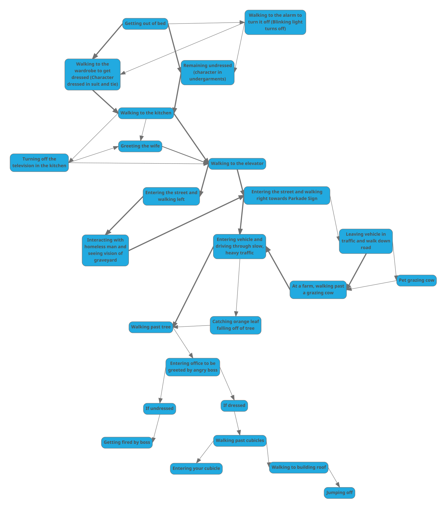

Interaction - Every Day the Same Dream
1. How does the allowed interaction keep the narrative on track?
-
The allowed interaction in the game is limited, but these limits on interaction
perfectly symbolize the subject this game deals with: the despondency, desolation,
and despair that can arise for many individuals from the mundanity of their everyday lives, where
variations in their daily activites are non-existent or are extremely limited. Such individuals
may feel as though they have no choice or no way out of their current circumstance,
akin to the limits on player-made choices in this game.
How does it permit variations and branches?
-
The main variations that the interaction in this game does offer include either rebelling against
the boss and showing up to work without proper attire and ultimately being fired, choosing
to leave the vehicle in traffic on the way to work and embarking on a brief escapade to a nearby
farm, taking the path in the opposite direction from the workplace and encountering a homeless man
who
shows the main character
a vision of death, and
finally jumping off of the building.
These variations were not immediately obvious, as it took some investigation to realize that they
exist in the game. Even these variations, though, are few and far between, which further represents
the idea that overcoming one's depressive and self-destructive lifestyle is not a simple matter,
even though it may seem like so to an outsider. This is because even following these alternate paths
does not end the main character's repetitive dream.
2. Describe the nature of the graphical quality and how it is relevant to the story.
-
Nearly all of the game is in grayscale to represent the dullness of the main character's life,
though color has been used in symbolic and interesting ways.
The objects that are colored in the game each represent a means of departure from
the mundanity of the main character's lifestyle; they symbolize escape and freedom. For example, the TV
screen flashes various
different shades of colors, and TV offers an escape from reality for many. Furthermore,
the parking sign is also colored blue, and with a vehicle, one can travel as far away and
to wherever they wish. The lone orange leaf on the dying tree will also fly freely with
the wind once it breaks off of the branch. There is also an escape sign colored green in the main
character's
workplace that leads to the rooftop, which also offers escape from the main character's reality if
he chooses
to jump.
-
The simplicity of the art style of the game and the use of simple shapes to draw
objects and scenes also represents the lack of depth to the main character's life and its
dull and simple nature.
3. Describe the nature of the interaction and how it influences choices and how the player feels.
The interaction this game offers is very directed and exists to support the linear narrative
that the game has, with occasional interactions that stray from the main path but immediately
return to it afterwords. This interaction serves to help the player relate with the main character's
circumstance; the little interaction that does exist prevents the player from experiencing
a large enough change from the main narrative. The player may ultimately become annoyed with
repeatedly playing what is largely the same story, just as how the main character of the game must be
fed up with his life.
Branch Descriptions
